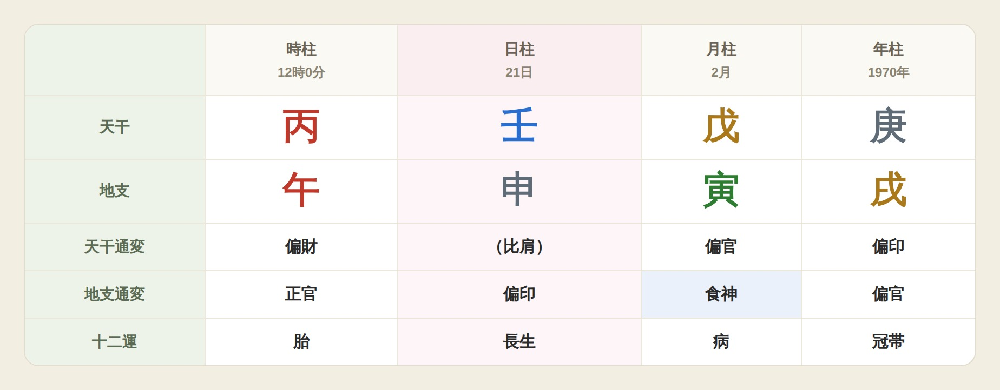

四柱推命占い自動鑑定PRO
四柱推命を知っている方・鑑定経験のある方へ読むだけ鑑定
難しい命式づくりも計算も、ぜんぶお任せ。
あなたは、読むだけ。
生年月日だけで、命式・大運・年運・相性まで自動。色でわかるから読み解きが速く、鑑定書はその場で作成・送信。
ご登録済みの方は ログイン
※要クレジットカード登録 ・ 一週間（7日間）は無料。
無料期間中の解約は、費用が一切かかりません。まずはお気軽にお試しください。
🎨 色でわかる命式❤ 相性まで自動📤 鑑定書をその場で送信📱 スマホ・タブレット・PC対応
動画で、実力が伝わる。
命式づくりから鑑定まで、実際に動く様子をご覧ください。
🎵 音楽つきの動画です（最初は音なし）。右上のスピーカーを押すと音が出ます。
いちばん大事な機能
相談を書くだけ。


相談を書くだけ。
答えから先に、すぐ出ます。
お客様のご相談をそのまま入力して、ボタンを1回押すだけ。命式を根拠に「結論」→「お客様へのお伝え方」→「どうすればよいか」の順で、その場で読み上げられる答えが出ます。
1相談を書いて、押すだけ
9:41
2答えから先に出る
9:41
✅ 良いか悪いか、ひと目でわかる🗣️ そのまま読み上げられる🔁 何度でも質問できる🎤 声でも入力できる📱 スマホ・タブレット・PC対応
※ 実際の画面の一例です。文章は、ご相談の内容と生年月日ごとに作られます。
🎤 声でも入力できる
チャットで打っても、
チャットで打っても、
声で話しても、相談が入る。
ふだんはチャットで文字を打って鑑定。長いご相談や手がはなせないときは、🎤を押して話しても入力できます。
🎤 押して話せば、文字になる話した言葉が、そのまま相談の欄に入ります。送る前に確かめて直せます。
🔮 占いの言葉も正しく聞き間違えやすい占いの言葉は、自動で正しい字に直します。
✕ 1回で全部消せる言い直したいときも、1文字ずつ消さずにすみます。
💴 追加料金なし声の入力は、月額料金の中でそのまま使えます。
※ iPhone（Safari）・Android（Chrome）・パソコン（Chrome／Edge）で使えます。使えない画面では、キーボードのマイクボタンからお話しください。
生年月日を入れるだけで、命式・蔵干・通変星・大運・年運までを自動で作成。緻密に計算された命式を、何度でも詳しく読み解きます。
むずかしい暗記も早見表も要らず、このツールひとつで鑑定が完結します。
プロの鑑定を支える、四柱推命の自動鑑定ツール
命式計算から鑑定・相性・運勢の流れまで、これ一つ。
蔵干・通変星・十二運・大運／年運／月運・会局（三合／方合／半合）まで自動で精密に読み解きます。
四柱推命の精密計算
大運／年運／月運の流れ
会局タイムライン
相性・格局・用神
オフライン対応
